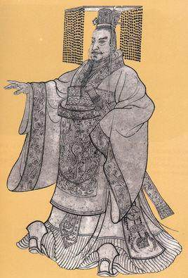
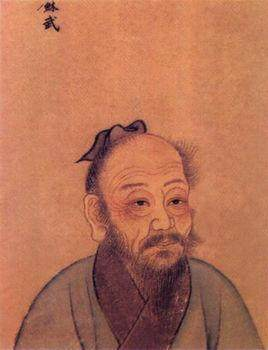
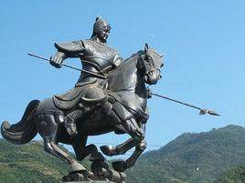

秦始皇（前259年农历十二月初三—前210年），嬴姓，赵氏，名政，又名赵正（政）、秦政，或称祖龙，秦庄襄王之子。中国历史上著名的政治家、战略家、改革家，首位完成华夏大一统的铁腕政治人物，也是古今中外第一个称皇帝的君主。

苏武（前140年—前60年），字子卿，汉族，杜陵（今陕西西安）人，代郡太守苏建之子。西汉大臣。武帝时为郎。天汉元年（前100年）奉命以中郎将持节出使匈奴，被扣留。匈奴贵族多次威胁利诱，欲使其投降；后将他迁到北海（今贝加尔湖）边牧羊，扬言要公羊生子方可释放他回国。苏武历尽艰辛，留居匈奴十九年持节不屈。至始元六年（前81年），方获释回汉。苏武去世后，汉宣帝将其列为麒麟阁十一功臣之一，彰显其节操。

马超（176年－222年），字孟起，扶风茂陵人，汉伏波将军马援的后人，马腾的儿子，少年成名，曹操曾多次征召马超入京为官，但都被马超拒绝。而后马腾入京被封为卫尉，马超就统领了马腾的部队。